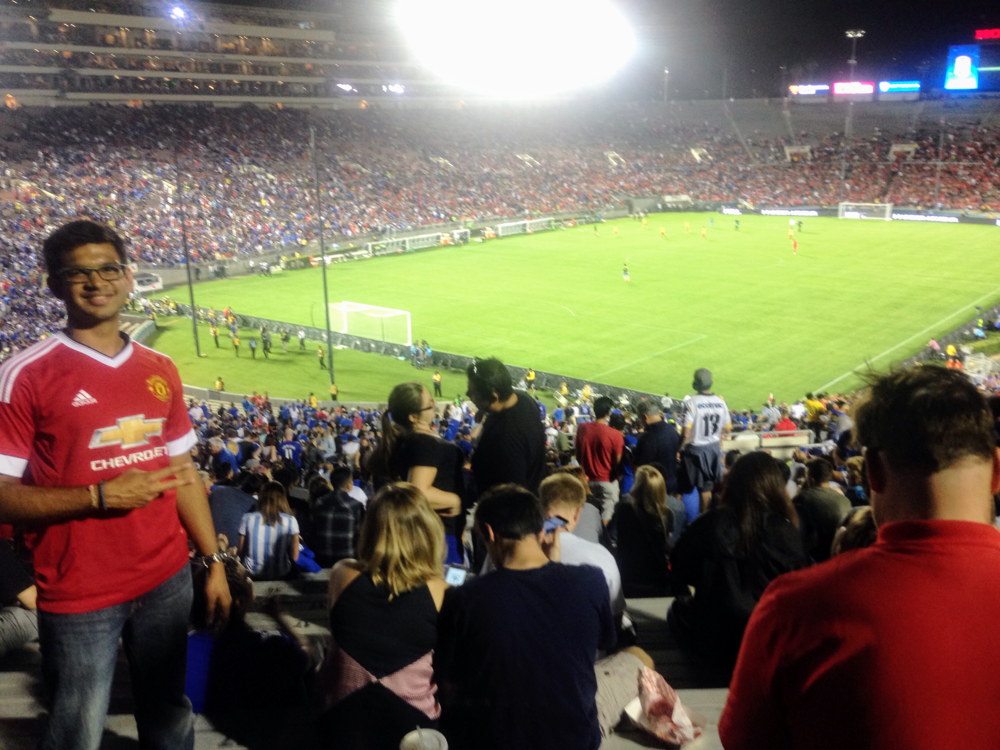
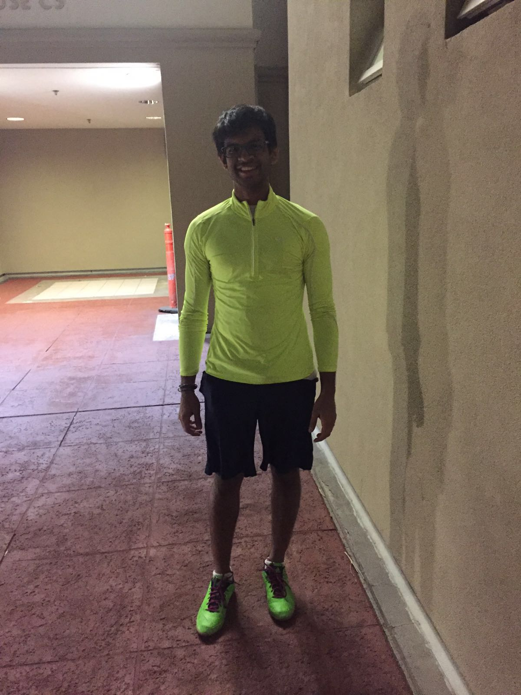
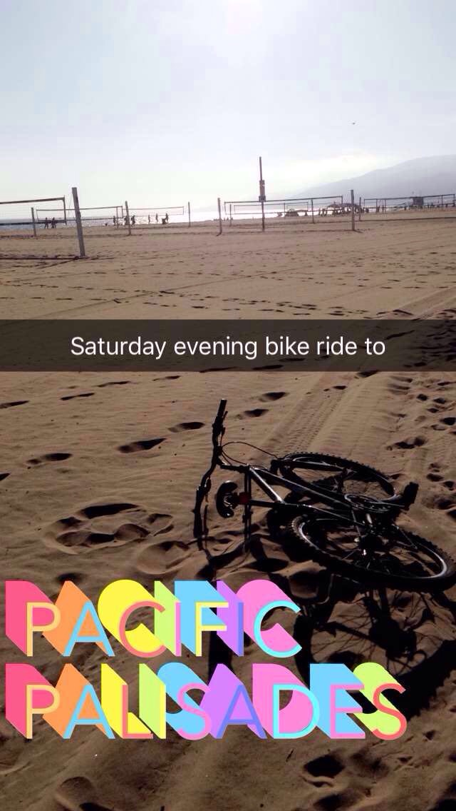
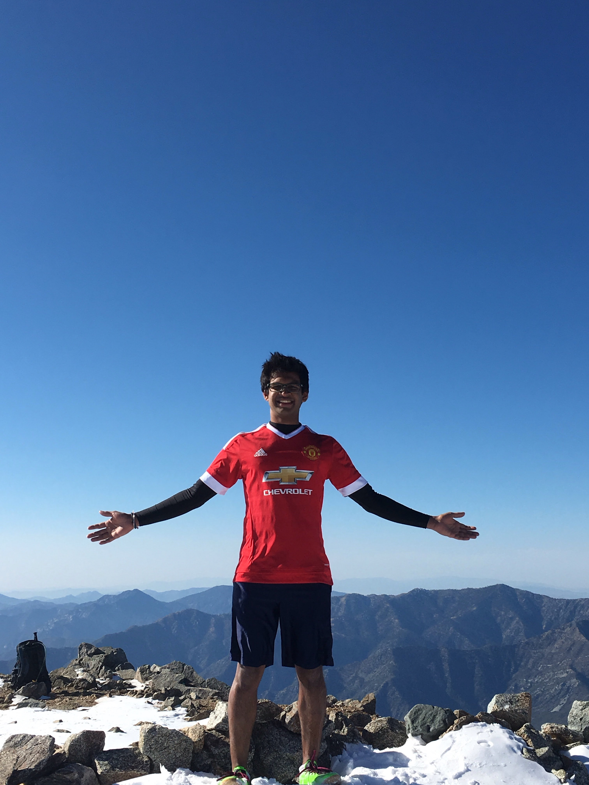
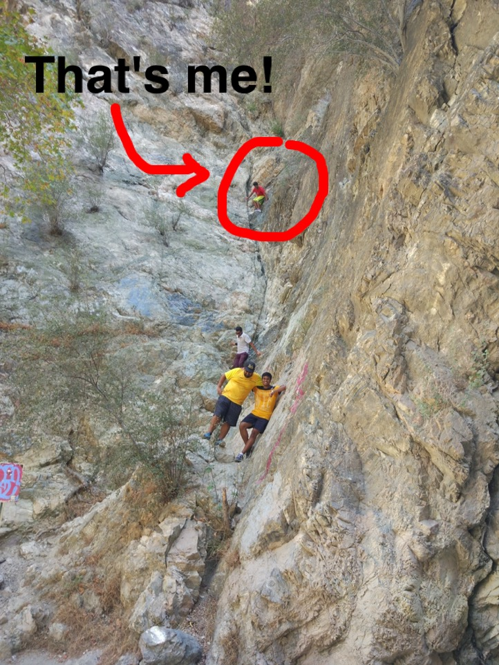

Some of my hobbies:
Cricket and Soccer


I enjoy playing and watching cricket and soccer. In cricket I support India. I have been to multiple games in Mumbai over all 3 formats - Test matches, ODIs and T20s. My favorite cricket player is Rahul Dravid. When I play cricket I bat, bowl and even wicketkeep a little. My favorite soccer team is Manchester United. I have many favorite soccer players but David Beckham is one of my top ones. When I play soccer I like playing in midfield but I also play as a striker if needed.
Running, Biking and Swimming


Running, biking and swimming are some other outdoor activities that I enjpy. I usually run around UCLA and explore places on campus that I would not otherwise go to in my daily routine! I also bike to different destinations from UCLA, such as Mulholland Drive, Westchester and Santa Monica. I like swimming as well and try to swim long distances to challenge myself.
Hiking


Since I enjoy running and the outdoors I also love hiking. I've been on multiple hikes including ones in Pasadena, Santa Monica Mountains, Mount Baldy, the Hollywood sign and Sequoia National Park. My favorite ones are Mount Baldy and Sequoia since these were physically challenging but also fun because of the snow.